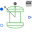

SMEE_GeneratorElectrical excited synchronous machine operating as generator |
|
Diagram
{kind=link}
Information
This information is part of the Modelica Standard Library maintained by the Modelica Association.
This example compares a time transient and a quasi static model of a electrically excited synchronous machine. The electrically excited synchronous generators are connected to the grid and driven with constant speed. Since speed is slightly smaller than synchronous speed corresponding to mains frequency, rotor angle is very slowly increased. This allows to see several characteristics dependent on rotor angle.
Simulate for 30 seconds and plot versus rotorAngle|rotorAngleQS.rotorDisplacementAngle:
smpm|smpmQS.tauElectrical: machine torque
Since the rotor slip is very low the transient and quasi static electro magnetic torque are practically equal.
Parameters (7)
| VsNominal |
Value: 100 Type: Voltage (V) Description: Nominal RMS voltage per phase |
|---|---|
| fsNominal |
Value: smeeData.fsNominal Type: Frequency (Hz) Description: Nominal frequency |
| w |
Value: Modelica.SIunits.Conversions.from_rpm(1499) Type: AngularVelocity (rad/s) Description: Nominal speed |
| Ie |
Value: 19 Type: Current (A) Description: Excitation current |
| Ie0 |
Value: 10 Type: Current (A) Description: Initial excitation current |
| gamma0 |
Value: 0 Type: Angle (rad) Description: Initial rotor displacement angle |
| smeeData |
Value: Type: SynchronousMachineData Description: Machine data |
Outputs (2)
Components (27)
| star |
Type: Star |
|
|---|---|---|
| grounde |
Type: Ground |
|
| sineVoltage |
Type: SineVoltage |
|
| powerSensor |
Type: PowerSensor |
|
| terminalBoxM |
Type: MultiTerminalBox |
|
| smee |
Type: SM_ElectricalExcited |
|
| smeeQS |
Type: SM_ElectricalExcited |
|
| groundr |
Type: Ground |
|
| groundrQS |
Type: Ground |
|
| rampCurrent |
Type: RampCurrent |
|
| rampCurrentQS |
Type: RampCurrent |
|
| mechanicalPowerSensor |
Type: MechanicalPowerSensor |
|
| mechanicalPowerSensorQS |
Type: MechanicalPowerSensor |
|
| constantSpeed |
Type: ConstantSpeed |
|
| constantSpeedQS |
Type: ConstantSpeed |
|
| smeeData |
Type: SynchronousMachineData Description: Machine data |
|
| voltageSourceQS |
Type: VoltageSource |
|
| starQS |
Type: Star |
|
| groundeQS |
Type: Ground |
|
| powerSensorQS |
Type: PowerSensor |
|
| terminalBoxQS |
Type: MultiTerminalBox |
|
| starMachineQS |
Type: Star |
|
| groundMachineQS |
Type: Ground |
|
|  | rotorAngle |
Type: RotorDisplacementAngle |
| rotorAngleQS |
Type: RotorDisplacementAngle |
|
| groundMachine |
Type: Ground |
|
| starMachine |
Type: Star |